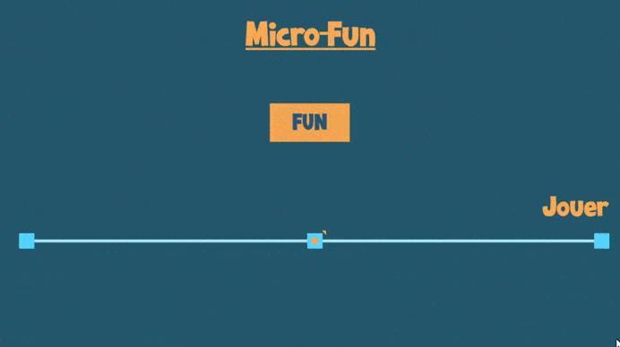

Micro Fun
Micro-Fun est un jeu de rapidité, dans lequel le joueur doit faire le meilleur score dans un temps imparti.
L'objectif de ce jeu, réalisé dans le cadre d'un défi, était de proposer des méthodes rendant fun la simple mécanique d'appuyer sur un bouton.
Ce défi a été organisé par le vidéaste
Atomium en Septembre 2020. Micro-Fun a été réalisé dans un délai de 24h.
Lien vers du jeu
Mes contributions :
- Développement du concept
- Prototypage
- Architecture du jeu
- UI/UX
|
- Direction artistique / sonore
- Optimisations
- Organisation de playtests
|
|
|
|

|

|